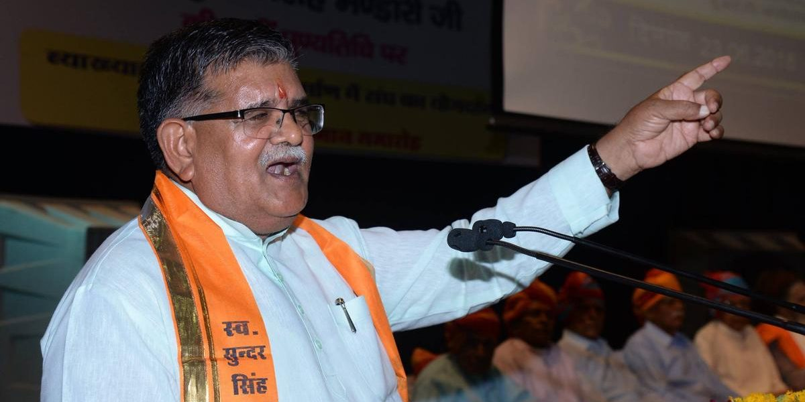

Political Party's
Politics of Rajasthan is dominated by two parties Bharatiya Janata Party (BJP) and Indian National Congress. The current government in Rajasthan is that of Indian National Congress.
Rajasthan's politics has mainly been dominated by the two state stalwarts, namely, Bhairon Singh Shekhawat and Mohan Lal Sukhadia of the Bharatiya Janata Party and the Indian National Congress respectively. Shri Sukhadia ruled Rajasthan for 17 years and died in February 1982 while Late Shri Shekhawat was in the national political horizon. The earlier politics were dominated by the Congress party. The main opposition party was the Bharatiya Jansangh, headed by Rajasthan's most popular leader Bhairon Singh Shekhawat and the Swatantra party headed by former rulers of Rajasthan. The Congress rule was untouched till the year 1962. But in 1967, Jansangh headed by Shekhawat and Swatantra party headed by Rajmata Gayatri Devi of Jaipur reached the majority point, but couldn't form a government. In 1972, the Congress won a landslide victory following the victory in the 1971 war. But after the declaration of emergency, Shekhawat became immensely popular, especially after he was forced to be arrested and was sent to Rohtak Jail in Haryana. As soon as the emergency was lifted, a joint opposition Janta Party won a thundering landslide victory winning 151 of the 200 seats. Shekhawat became the Chief Minister. The government was dismissed by Indira Gandhi in 1980 after she restored power in Delhi. In the 1980 elections, the Janta Party split at the centre giving the Congress a victory in Rajasthan.
Indira Gandhi was assassinated in 1984, and in 1985, a sympathy wave let the Congress sail through in the elections. But in 1989, which could be called a Shekhawat wave, the BJP-JD alliance won all 25 Lok Sabha seats and 140 of 200 seats in the assembly. Shekhawat became the Chief Minister for the second term. Though Janta Dal took back its support to the Shekhawat government, Shekhawat tore apart the JD and continued to rule as the Chief Minister thus earning the title of master manipulator. After the Babri Mosque demolition in Ayodhya, Shekhawat government was suspended by the P.M., Narsimha Rao and President's rule was enforced in Rajasthan. Election took place in 1993 in which his party won even after the breaking of its alliance with the Janta Dal. But the then governor Bali Ram Bhagat didn't allow Shekhawat to form the government, but after immense pressure from Shekhawat, who reached the majority point after supports from independents like Sardar Gurjant Singh, Rani Narendra Kanwar, Sujan Singh Yadav, Rohitashva Kumar Sharma, Kr. Arun Singh, Sundar Lal etc. crossed the majority line of 101 seats in the assembly. Shekhawat became the Chief Minister for the third term. This time he ran a successful third term. This was perhaps the diamond phase for Rajasthan as it led to all-round development and Rajasthan also gained identity on the globe as a rapidly developing and beautiful state.Shekhawat introduced Heritage, Desert, Rural, Wildlife tourism to Rajasthan In 1998 elections, the BJP lost heavily due to the onion price rise issue. Ashok Gehlot ran a 5-year government. But he lost the Lok Sabha elections in 1999, only 6 months after its victory in the assembly elections. Shekhawat became the Vice-President of India in 2002 so he had to leave Rajasthan politics and the BJP. He appointed Vasundhara Raje as his successor. She led the BJP in 2003 elections and led it to a victory. She was the Chief Minister of Rajasthan from 2003 - 2008. Narpat Singh Rajvi was the Health Minister, Ghanshyam Tiwari was the Food Minister, and Gulab Chand Kataria was the Home Minister. The BJP won the 2004 Lok Sabha elections from here as well. But the tables turned in December 2008, when the infighting within the BJP, Raje's perceived autocratic and despotic rule, and the police excesses in the Gurjar-Meena agitation combined to overcome the incumbent Raje government's development and growth planks, and the Congress emerged victorious with the support of some independent MLA's. Ashok Gehlot was sworn-in as the new Chief Minister of Rajasthan. In 2013 Bharatiya Janata Party won by very large difference. BJP got 163 seats and Congress got only 21 seats out of 200 seats. Vasundhara Raje became the Chief Minister for second time.